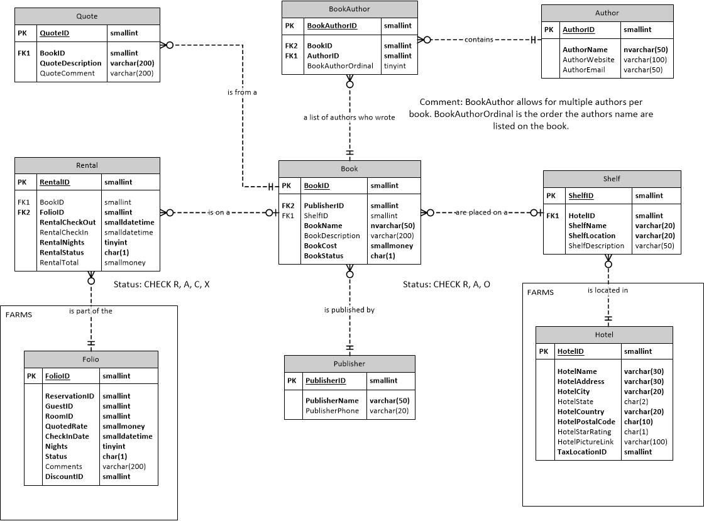

HLRS System
Project Overview
The HLRS will provide a service by which the Guests can check out books for the duration of their stay.
This will ensure that the Guests will have a more pleasurable experience at the hotel and may return in the future.
A guest may choose a book from one of the Hotel’s Library shelves which they may check out for the duration or their stay.
In addition to this service, the system will also have the functionality to store information of the author,
release, and publisher of the book. Additionally, noteworthy quotes can be stored to be easily accessed in the future.
The system will allow for easy modification in the future to add other rental options for the guest.
Data Specifications Overview
Part A
Updates:
- 8/1/2016: Added RentalTotal to Rental
- 8/5/2016: Updated tr_UpdateShelfDescription to INSTEAD OF
- 8/5/2016: Deleted AuthorFirst and AuthorLast and added AuthorName nvarchar(50) NOT NULL
- 8/5/2016: Updated BookName to be a nvarchar(50)
- 8/5/2016: Updated ShelfLocation to varchar(20) and ShelfDescription to a varchar(50)
- 8/5/2016: Removed Book as a FK of Rental
- 8/5/2016: Added sp_GetAuthor
- 8/5/2016: Updated tr_AuthorMustExist to tr_BookMustExists
- 8/5/2016: Updated tr_UpdateRental to tr_UpdateCheckIn
- 8/9/2016: Added sp_GetBooks
- 8/9/2016: Added sp_InsertBooks2 and sp_InsertBooks3 for ease of insert.
- 8/9/2016: Deleted dbo.getBooks

Part B: TRIGGERS
- tr_UpdateShelfDescription
- Type: On Shelf INSTEAD OF Insert
- After a Shelf is inserted, this trigger puts the hotel name, from a linked server, and the shelf location in the description.
- tr_UpdateStatus
- Type: On Rental AFTER Update
- Once the Rental Status changes this trigger updates the book status.
- tr_UpdateCheckIn
- Type: On Rental AFTER Update
- When RentalCheckIn is updated, this trigger will calculate the cost, by calling dbo.calculateCost and apply sales tax from TaxLocation,
- from a linked server, and store it in RentalTotal. It will then insert a record into FARMS Billing.
- tr_BookMustExist
- Type: On BookAuthor AFTER Insert/Update
- If an improper BookID is inserted/updated, then raise an error message.
Part C: STORED PROCEDURES
- sp_UpdateRental
- Allows the user to update thier Rental Check In time.
- Input Parameter(s) : smallint(RentalID), smalldatetime(RentalCheckIn)
- Output Parameter(s) : RentalID
- sp_GetBooks
- Prints all the available books on a shelf.
- Input Parameter(s) : smallint(ShelfID)
- Output Parameter(s) : ShelfID
- sp_GetAuthor
- Prints all the Authors attributed to a publisher.
- Input Parameter(s) : smallint(PublisherID)
- Output Parameter(s) : PublisherID
- sp_InsertBook
- Allows the user to input a book name and up to 3 authors. The database will insert the book and the authors if they do not exist. Then it will create a BookAuthor entity for the book.
- Input Parameter(s) : varchar(50)(BookName),smallmoney(BookCost), varchar(50)(AuthorName), varchar(50)(AuthorName) NULL, varchar(50)(AuthorName) NULL
- Output Parameter(s) : BookID
Part D: USER DEFINED FUNCTIONS
- dbo.showCheckedOut
- This will utilize a cursor or dbo.getBooks and show all the checked out books in a hotel with the due dates.
- Input Parameter(s): smallint(HotelID)
- Returns__ Table with BookName/RentalCheckIn+RentalNights
- dbo.printAuthors
- This will utilize a cursor to print all the Authors for a book in order.
- Input Parameter(s): smallint(BookID)
- Returns__ Table with BookName/List of AuthorFirst,AuthorLast
- dbo.getQuote
- This function will output all the quotes from an AuthorID input.
- Input Parameter(s): smallint(AuthorID)
- Returns__ Table with Quotes
- dbo.calculateCost
- This function will calculate base cost of Rental by determining if it is late.
- Input Parameter(s): smallint(RentalID)
- Returns__ smallmoney
Other:
- DB and Table Creation Script
- INSERT INTO Statements Sample Data
- Stored Procedures, User Defined Functions), and Triggers of the database
- Demo Script